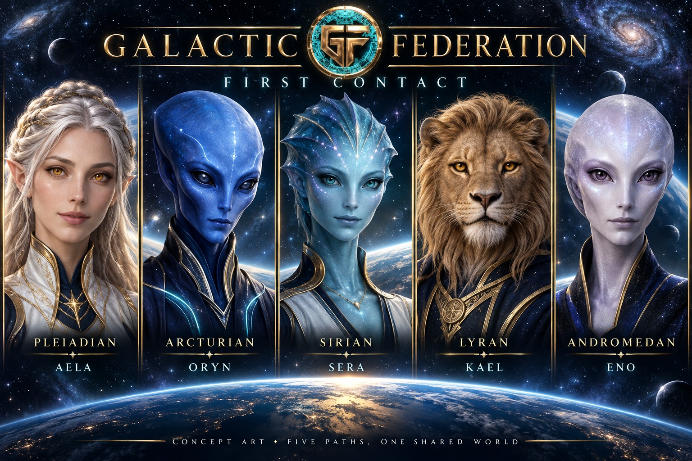

Sera · A deeper mission
The Long Way Home
Prepare your ship, choose a route, handle a repair, and see how several decisions travel with you.
About 8–12 minutesReady to explore
Take the helm →
A world in the making · Signal 001
Explore a world where financial choices have consequences. Play the story, test the ideas, and see what is actually being built.
Start with a three-minute introduction, explore a deeper story, or bring the crew together in The Meridian Relay. Every mission is open, and nothing requires a wallet or purchase.
“Welcome aboard. You don't need all the answers to begin. Meet the crew, make a choice, and see where it leads. Bring your curiosity—and take something useful back to Earth.”
Free practice with fictional credits. No wallet, account, or purchase needed. The alien setting is original storytelling inspired by spiritual lore; mission progress reflects learning, not spiritual advancement.

Create your own Federation explorer, or choose an image from your device.
Optional. No wallet or account needed. Avatar choices can be saved on this device.
Collect a badge for every mission you finish. Revisit a story, try another choice, and see what changes.
Remove the passport saved on this device? Your avatar and current session badges stay.
Badges celebrate story completion. Every mission remains open. Nothing expires, and you can return at your own pace.
Check the GFOF balance in a connected wallet without moving tokens, then follow an open tester path through the Lending Lab and public build record. Every mission remains open without a wallet or purchase.
Open Explorer Passport →Read-only wallet check. No staking, yield, reward, beta reservation, or financial entitlement.
Take the controls in The Supply Run. Plan deliveries, manage fuel and time, and find a route that reaches your goal. Three fixed scenarios invite different strategies.
Play The Supply Run →A short strategy game · No timer · Separate from your story badges
Supply fictional USDC, borrow against fictional SOL, watch interest and collateral risk change, then decide how much principal to repay. A short, wallet-free simulation connected to the separate real lending product under construction.
This is a teaching simulation, not live lending. No wallet, real funds, live rates, yield or token rewards.
Chapter One complete. Five different choices, five useful habits to take with you. Explore the deeper stories →
Stay with the five guides through longer stories. Each decision changes what you can do next. Start anywhere, or follow the chapter from Sera to Eno.
Chapter Two explored. Make room. Check the source. Count the costs. Revise the plan. Understand the access. Bring the crew together in The Meridian Relay →
Prepare your ship, choose a route, handle a repair, and see how several decisions travel with you.
About 8–12 minutesReady to explore
Take the helm →Investigate a suspicious transmission and a follow-up recovery offer. Separate claims from independent evidence.
About 6–10 minutesReady to explore
Open the transmission →Buy stock before opening, discover the day’s sales, and decide what to do with what remains.
About 7–10 minutesReady to explore
Plan the market day →Pay for an essential surprise, revisit a goal, and choose a pace that fits the revised plan.
About 6–9 minutesReady to explore
Revisit the plan →Inspect permissions, follow what remains after disconnecting, and choose boundaries for data and secrets.
About 7–10 minutesReady to explore
Approach the gate →Bring all five guides together for one connected market day. Check an offer, read a permission, cover the costs, and revise the next goal.
A longer adventure with all five guides · No earlier badge required
Ready to explore
Gather the crew →Continue exploring the Federation through its public sites:
Explore the public sites online. Completion carries no token reward or financial entitlement.